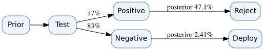

D03 · Bayesian evidence and the value of a diagnostic test
Skill: Separate posterior belief from the economic value of observing a signal.

Update a prior correctly
Let H mean a route-control subsystem has an unacceptable defect. Prior probability is P(H)=0.10. A diagnostic test is positive 80% of the time when H is true (sensitivity 0.8), and is positive 10% when H is false (false-positive rate 0.1). The total chance of a positive signal is:
P(+) = P(+|H)P(H) + P(+|not H)P(not H)
= 0.8×0.10 + 0.1×0.90 = 0.17.
Bayes' rule gives P(H|+) = 0.08/0.17 ≈ 0.470588. Despite the 80% sensitivity, a positive result does not mean an 80% chance of a defect. For a negative signal, P(−)=0.83 and P(H|−)=0.02/0.83≈0.024096.
Turn belief into a decision
Assume two actions: deploy or reject. Deploying a defective subsystem has illustrative expected loss 100; deployment when not defective has loss 0; rejecting always has loss 18. Without testing, expected loss of deploy is 0.10×100 = 10, less than rejection's 18. Thus deploy is chosen.
If test positive, the conditional expected loss of deploying is 47.06, so reject (loss 18). If negative, deploy (expected loss 2.4096). The expected loss under the test-informed policy is:
0.17×18 + 0.83×(100×0.02/0.83) = 3.06 + 2 = 5.06.
Expected value of sample information (EVSI), before test cost, is 10−5.06 = 4.94 loss units. If testing costs 6 units, it is not economical under this simplified loss model. The expected value of perfect information (EVPI) is an upper bound: perfect information deploys when safe and rejects when defective, giving expected loss 0.9×0+0.1×18=1.8; EVPI = 10−1.8=8.2.
What could invalidate the conclusion?
Test performance may depend on defect severity or operating environment. A signal may not be independent across repeated tests. The loss of a safety incident may not be expressible as a commensurate financial value, and a legal safety gate may prohibit deployment regardless of expected loss. Priors must be elicited transparently and stress-tested.
Practice
Question: Why can a new test with high sensitivity produce zero decision value?
<details><summary>Solution</summary>
If each possible result leaves the same action optimal—or if no authorized decision can change—there is no improvement in expected decision value. Information is useful for action only through its effect on the decision policy.
</details>
Transfer artifact: State/action/loss matrix, signal likelihoods, prior/posterior table, EVSI and break-even test cost. See Bayesian value of information.